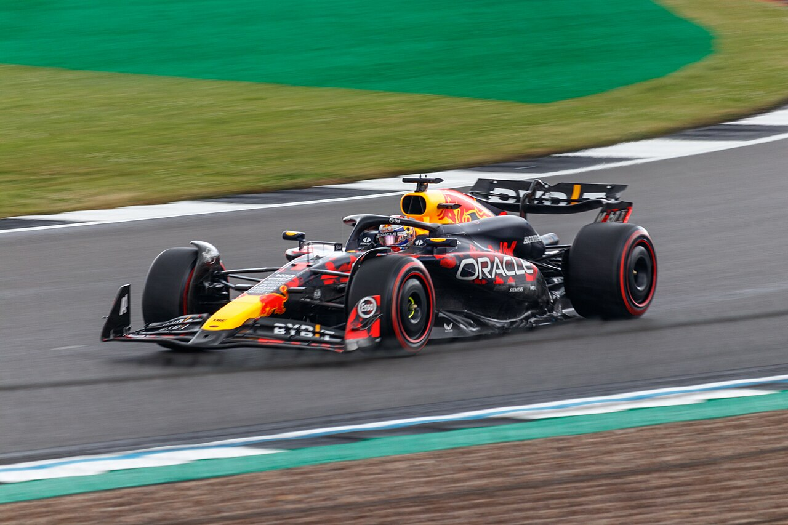
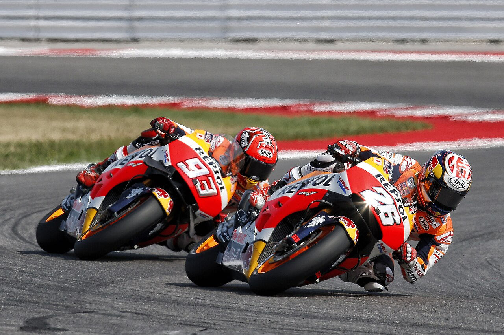

Photo © Jen Ross / Wikimedia Commons source · Creative Commons Attribution 2.0 Generic (CC BY 2.0) · Resized; no crop.
Drivers' Championship
Standings hidden — they'd give away the Azerbaijan GP result.
Tick the latest weekend’s watched box above to reveal.
| Pos | Driver | Team | Pts |
|---|
Standings checked 30 September 2026 against the official driver table and team table. Each totals 1,695 points. Drivers who changed teams retain their personal points; constructors retain points scored for them.
Constructors' Championship
| Pos | Team | Pts |
|---|
Who can still win it?
Title maths hidden — it gives the Azerbaijan GP result away.
Tick the latest weekend’s watched box above to reveal.
| Driver | Pts | Max poss. | Alive? | Model estimate |
|---|
Constructors' model estimate
| Team | Pts | Max poss. | Alive? | Chance |
|---|
Race by race — podiums, gaps & fastest laps
Remaining 2026 calendar
| Rd | Grand Prix | Circuit | Date |
|---|
S= sprint weekend. Remaining calendar retained from the 28 September edition; the next event’s timetable was rechecked on 30 September. All listed rounds are counted in the title calculations. Check the official F1 calendar for changes.
Paddock news
News checked: 30 September 2026. Stories stay hidden until the latest weekend is marked watched. Each summary links to its source; publication dates are shown below.

Photo © Box Repsol / Wikimedia Commons source · Creative Commons Attribution 2.0 Generic (CC BY 2.0) · Resized; no crop.
Riders' Championship
Standings hidden — they'd give away the Austrian GP result.
Tick the latest weekend’s watched box above to reveal.
| Pos | Rider | Team | Pts |
|---|
Standings after Austria, checked 30 September 2026 against the published championship table. Jorge Martín leads Marc Márquez by 12 points; Marco Bezzecchi is 42 points behind Martín. The table includes substitutes and wildcards who scored points.
Who can still win it?
Title maths hidden — it gives the Austrian GP result away.
Tick the latest weekend’s watched box above to reveal.
| Rider | Pts | Max poss. | Alive? | Model estimate |
|---|
Round by round — podiums, gaps & fastest laps
Remaining 2026 calendar
| Rd | Grand Prix | Circuit | Date |
|---|
Every round includes a Saturday Sprint. Remaining calendar retained from the 28 September edition; Motegi’s timetable was rechecked on 30 September. All listed rounds are counted in the title calculations. Check the official MotoGP calendar for changes.
Paddock news
News checked: 30 September 2026. Stories stay hidden until the latest weekend is marked watched. Each summary links to its source; publication dates are shown below.